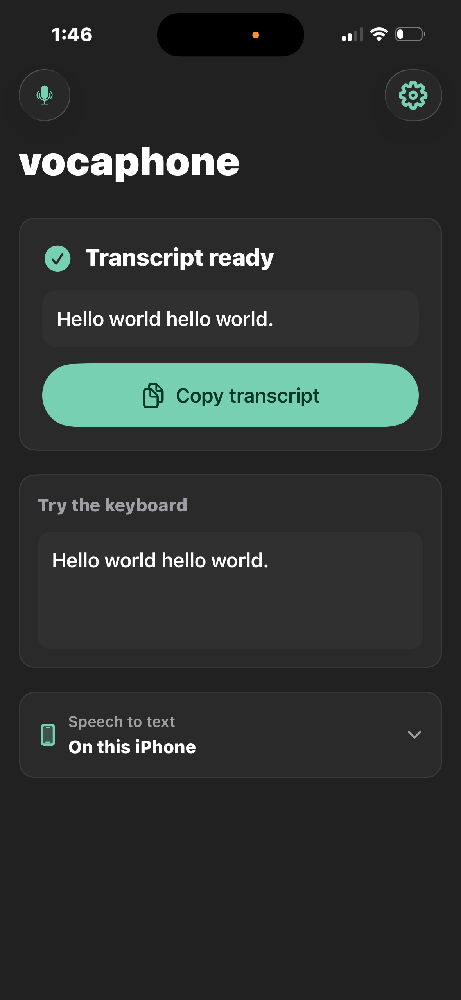
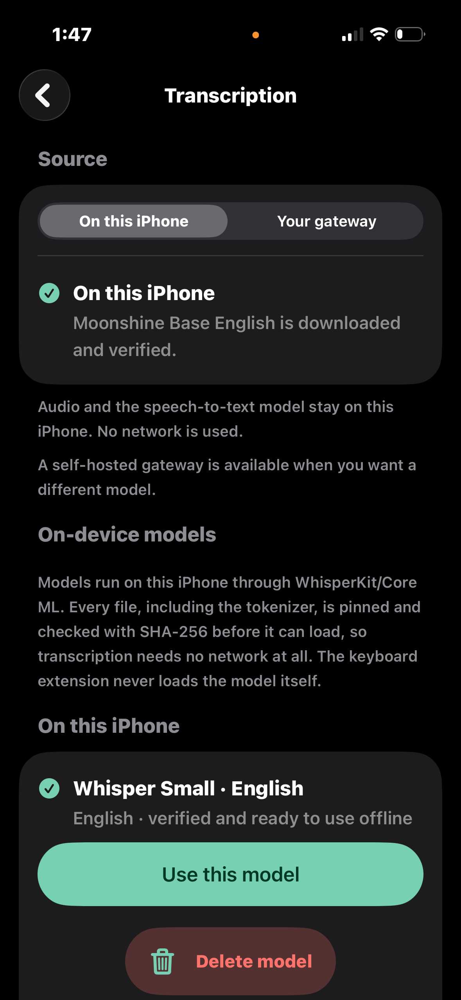

{kind=link}
{kind=link}
01
say it once
text lands where you’re already typing.
Dictate from the VocaPhone keyboard and keep going in Messages, Notes, email, or any other text field. No copy-and-paste detour.

private speech-to-text, running on your phone
voice typing that never has to leave your phone.
54 language choices · support depends on model · gateway optional
Explore real iPhone and Android screenshots: the keyboard, dictation, and on-device models.
iPhone beta captures · August 2026. Screens may vary by version.
Watch the screenshot walkthrough ↓
Getting started? See the iPhone setup and workflow ↗
 View full screen ↗
View full screen ↗
The VocaPhone app records while you return to Notes. Finish from the keyboard to transcribe and insert at your cursor.

View full screen ↗Review the finished transcript in VocaPhone. This capture shows on-device speech-to-text selected.

View full screen ↗Download a supported model to dictate offline. The optional gateway remains a separate choice.
 View full screen ↗
View full screen ↗
Speak from the keyboard and insert text at your cursor. This capture shows VocaPhone in a browser notepad.
 View full screen ↗
View full screen ↗
Use the app’s scratchpad to dictate a note. Language, writing style, and model choices stay close at hand.
 View full screen ↗
View full screen ↗
Download a speech-to-text model, then dictate offline. Choose a model that fits your language and available storage.
A 15-second walkthrough made from real iPhone beta screenshots. Silent, with captions; the sequence illustrates the workflow, not live transcription speed.
iPhone screenshots captured in August 2026. The app records audio; the keyboard coordinates with the app and inserts the finished text.
Run speech-to-text entirely on your phone, or choose VocaGateway when you want more models and shared compute on hardware you control.
say it once
Dictate from the VocaPhone keyboard and keep going in Messages, Notes, email, or any other text field. No copy-and-paste detour.
keep it on the phone
Turn on on-device transcription and VocaPhone runs the model right on your iPhone or Android phone. After the model is downloaded, dictation works offline. A gateway is available, but never required.
sound like yourself
Choose from 54 languages plus automatic detection, pick a writing style, and teach VocaPhone the names and phrases you use most. Available languages are filtered to what your selected model can actually transcribe.
Download a model that fits your phone. Every file is integrity-checked before it runs.
Use the voice keyboard and speak naturally in your own rhythm.
Audio becomes text locally, then the successful recording is removed.
tiny honest detail: iOS keyboards cannot use the microphone, so VocaPhone records in its companion app and returns the finished text to the keyboard. The model still runs on the iPhone.
Keep everything on your phone for the simplest offline setup. Or run VocaGateway on your Mac, Linux machine, or home server when you want broader model and engine choices, more processing power, or one shared transcription setup for your devices.
The model and audio stay on your phone. After the model download, transcription works offline.
Your phone sends the recording to the gateway you configured. It runs a local speech engine and returns the transcript.
One privacy stance, built around the way each phone actually works.
Real iPhone app screenshot. Dictate in your apps with a model running on your iPhone. The containing app records; the keyboard inserts your text.
Real Android app screenshot. Run speech-to-text on your phone and insert text directly from the VocaPhone keyboard.
VocaPhone is free, open source, and built to run speech-to-text directly on your phone. No gateway is required. No account. No subscription. No analytics SDK quietly keeping score — usage reporting is opt-in, self-hosted, and sends counters rather than content. VocaGateway is the optional, self-hosted path for more models or shared compute.
read the code on GitHub ↗still stuck?
VocaPhone is built in the open, so the fastest answer is usually a message or an issue.
ask in Discord open an issueNo. In on-device mode, recording and speech-to-text both happen on the phone. After a transcript is safely stored, the successful audio file is deleted. If you deliberately choose gateway mode, audio goes to the gateway you configured. Use a trusted LAN, encrypted private network, or HTTPS to protect it in transit.
No. Download an on-device model once and VocaPhone can transcribe without a gateway, account, or network connection. If you want larger models, more engines, or shared hardware, you can self-host VocaGateway on a Mac, Linux machine, or home server and pair your phone by QR.
VocaPhone offers 54 language choices plus Automatic: the 25 European languages Parakeet TDT covers, the East Asian ones SenseVoice and Dolphin handle, the Indic range, and the widely spoken languages Whisper does well on a phone. Actual support depends on the speech-to-text model you select, and the app greys out the choices the active model cannot transcribe.
It works wherever the operating system allows a custom keyboard and editable text field. Password fields and some security-sensitive screens may force the system keyboard instead.
Apple does not let keyboard extensions access the microphone. The companion app records, shares the finished session with the keyboard, and lets the keyboard insert the transcript at your cursor.
After setup, private on-device dictation needs only your phone and a downloaded model it supports. Android has a public beta. iPhone has a public TestFlight beta, or a Mac with Xcode, Apple signing, and a physical iPhone if you would rather build it yourself. Gateway hardware remains optional.
Yes. VocaPhone is free and AGPL-3.0 licensed. There is no VocaPhone account, subscription, or paid cloud speech service.
VocaPhone is in beta. Here is exactly what each platform needs today.
public beta
Uninstall io.github.mrsunglasses.localflow before
sideloading if that older Local Flow build is still installed.
Download vocaphone.apk from that tag and verify it with
the SHA256SUMS.txt included in the same release.
public TestFlight beta
A TestFlight build expires after 90 days and the beta has a tester limit, so building from source stays available either way. There is no App Store release yet.
ready when you are
Download a model to your phone and turn speech into text without sending your voice anywhere.
no gateway required · free & open source · AGPL-3.0